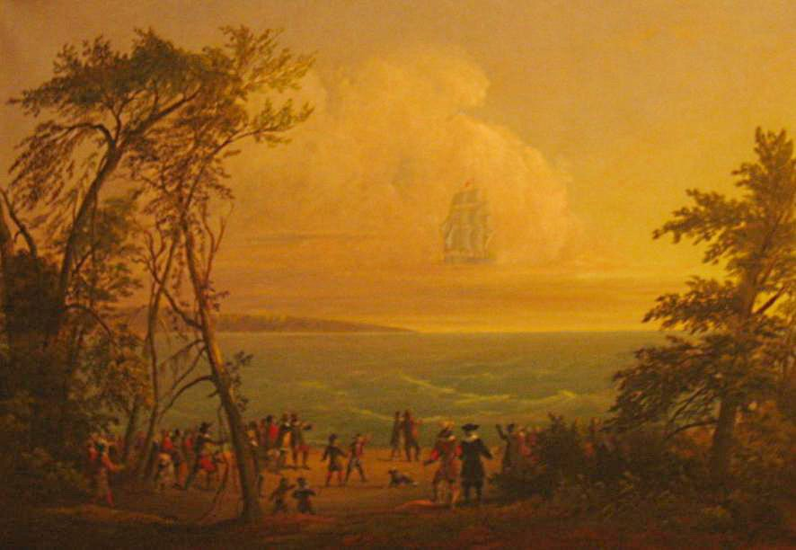

Dans le Yorkshire, observation d'armées chargeant l'une contre l'autre Aurore boréale ?Johnson, 1894 < Silverman, Sam: "Auroral Annotations".
À Bristol, observation d'un météore flamboyant pendant plusieurs
nuits de suite Johnson, 1894 < Silverman, Sam: "Auroral Annotations".
Huile dépeignant la vision du vaisseau fantôme vers 1850 Talbot, Jesse (1806-1879)

Au-dessus du port de New Haven (Connecticut) apparaît la forme de la
quille d'un navire à 3 mâts, auquel furent soudain ajoutés toute l'attaque et les voiles, et présentement après,
au sommet de la poupe, un homme se tenant une main akimbo sur son côté gauche, et dans sa main droite une épée
tendue vers la mer. Puis depuis le côté du navire qui était de la ville s'éleva une grande fumée, qui recouvrit
tout le navire, et dans cette fumée, il s'évanouit ; mais certains virent sa quille plonger dans l'eau. Ceci fut
vu par nombre de personnes, hommes et femmes, et perdura pendant près de 15 mn Winthrop, John : The history of New England from 1630 to 1649, Boston, 1853,
vol. 2, pp. 399-400 < Deliyannis, Y.: "1648, June 28th : New Haven (Connecticut)", Magonia Exchange, lundi 10 décembre 2007Mather, Cotton : Magnalia Christi Americana; Or, The Ecclesiastical History of New-England; from Its First Planting, in the Year 1620, Unto the Year of Our Lord 1698. In Seven Books. Hartford: S. Andrus and Son, 1853, pp. 83-84.
À Saint Aubin (France), un phénomène bleu clair en forme de goutte
d'eau est observé descendre pendant 7 mn en émettant des étincelles Winkler (FUFOR), AA vol. 3, n° 3 < Aubeck, C.: "France 1648: sparkling blue object, 7 minutes?", Magonia Exchange, 7 mai 2007.